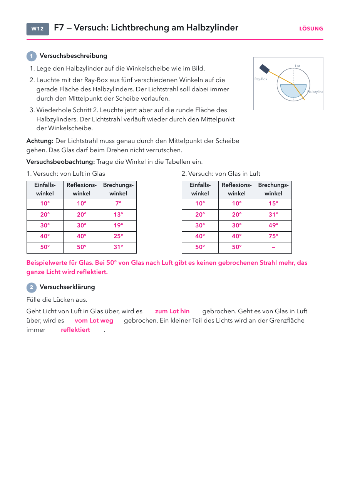

- Versuchsblatt: Seite 1, eins pro Schüler (zwei Tabellen, zu lang für „2 auf 1“).
- Folien und Lösungen: nicht drucken.
Material
Demo (für dich)
| Material | Anzahl | Hinweis |
|---|---|---|
| Glas mit Wasser und Strohhalm | 1× | für den Einstieg |
| Tasse und Münze | 1× | Münzversuch, Wasser langsam eingießen |
Schülerversuch (pro Gruppe)
| Material | Anzahl | Hinweis |
|---|---|---|
| Ray-Box mit einem Spalt | 1× | |
| Halbzylinder aus Glas oder Acryl | 1× | |
| Winkelscheibe | 1× |
Raum abdunkeln. Der Strahl muss genau durch den Mittelpunkt gehen, sonst wird er an der runden Seite zusätzlich gebrochen.
Die Stunde
1 · Einstieg
2 · Versuch
3 · Erklären
4 · Alltag
5 · Antwort und Check
1
Einstieg
Strohhalm im Glas, Leitfrage 7, Vermutungen.
Strohhalm im Glas, Leitfrage 7, Vermutungen.
2
Versuch
Halbzylinder in Gruppen, zwei Richtungen, Versuchsblatt.
Halbzylinder in Gruppen, zwei Richtungen, Versuchsblatt.
3
Erklären
Lichtbrechung und Richtung zum Lot.
Lichtbrechung und Richtung zum Lot.
4
Alltag
Münzversuch vorne, Beispiele mündlich.
Münzversuch vorne, Beispiele mündlich.
5
Antwort und Check
Antwort auf Leitfrage 7 ins Heft, Handzeichen, Lösung.
Antwort auf Leitfrage 7 ins Heft, Handzeichen, Lösung.
Folie 1
Beobachte
Ein gerader Strohhalm steht schräg im Wasserglas. Was siehst du?
Folie 2
Leitfrage 7
Warum sieht der Strohhalm im Wasser geknickt aus?

Was vermutest du? Wir sammeln eure Vermutungen.
Folie 3 · Schülerblatt mit Lösung
📄 Versuchsblatt austeilen · Versuch in Gruppen

Folie 4
15. Die Lichtbrechung
Beim Übergang in ein anderes Material ändert Licht seine Richtung. Man sagt, es wird
gebrochen. Der Grund: Licht ist in Wasser und Glas
langsamer als in Luft.
Folie 5
16. In welche Richtung wird gebrochen?
Von Luft ins Wasser (optisch dünner → dichter): zum Lot hin.
Von Wasser in die Luft (dichter → dünner): vom Lot weg.
Folie 6
Brechung im Alltag
| im Alltag | was man sieht | warum |
|---|---|---|
| Schwimmbecken | es sieht flacher aus, als es ist | Das Licht vom Boden wird an der Oberfläche vom Lot weg gebrochen. |
| Münze im Becher | sie taucht auf, wenn Wasser hineinkommt | Das gebrochene Licht gelangt über den Rand ins Auge. |
| Reiher beim Fischen | er zielt unter den Fisch, den er sieht | Der Fisch ist tiefer, als er von oben aussieht. |
| Flimmern über heißer Straße | die Luft scheint zu wabern | Warme und kalte Luft brechen das Licht verschieden stark. |
Frage: Warum sieht ein Schwimmbecken flacher aus, als es ist?
Antwort: Licht vom Boden wird beim Übergang vom Wasser in die Luft vom Lot weg gebrochen. Das Auge verlängert die Strahlen geradlinig zurück und sieht den Boden höher.
Antwort: Licht vom Boden wird beim Übergang vom Wasser in die Luft vom Lot weg gebrochen. Das Auge verlängert die Strahlen geradlinig zurück und sieht den Boden höher.
Folie 7
Antwort auf Leitfrage 7
Warum sieht der Strohhalm im Wasser geknickt aus?
Das Licht vom Strohhalm wird beim Übergang von Wasser zu Luft gebrochen.
Unser Gehirn nimmt aber an, dass Licht geradlinig verläuft,
und verlängert die Strahlen gerade nach hinten. Deshalb erscheint der Strohhalm verschoben.
Folie 8
Check zu Leitfrage 7
1) Licht geht von Luft in Wasser über. Wie wird es gebrochen?
- Zum Lot hin
- Vom Lot weg
- Gar nicht
- Immer um genau 90°
2) Warum wird Licht an der Grenzfläche überhaupt gebrochen?
- Weil Wasser schwerer ist als Luft
- Weil Licht im Wasser langsamer ist als in Luft
- Weil das Wasser das Licht anzieht
- Weil das Glas im Weg steht
Folie 9
Lösung
1) a 2) b
Lichtbrechung
- Licht ist in Wasser etwa 25 % langsamer als in Luft, in Glas etwa 33 %. Je langsamer, desto „optisch dichter“ heißt der Stoff. Mit der Dichte in kg/m³ hat das nichts zu tun.
- Richtwerte von Luft in Wasser: 30° → 22°, 45° → 32°, 60° → 41°. Von Luft in Glas: 30° → 19°, 45° → 28°.
- Bei senkrechtem Einfall (0°) wird nichts gebrochen, das Licht wird nur langsamer.
- Ein kleiner Teil des Lichts wird an jeder Grenzfläche reflektiert. Von Glas nach Luft gibt es ab etwa 42° gar keinen gebrochenen Strahl mehr (Totalreflexion). Das kommt beim Glasfaserkabel wieder.
- Typische Fehlvorstellungen: Der Strohhalm ist wirklich geknickt. Licht wird immer zum Lot hin gebrochen. Brechung passiert im Wasser statt an der Grenzfläche.
Tipps zum Versuch
- Der Strahl muss genau durch den Mittelpunkt der Scheibe gehen. Dann trifft er die runde Seite senkrecht und wird dort nicht noch einmal gebrochen.
- Beim zweiten Versuch (von Glas in Luft) bei 50° kein gebrochener Strahl: nicht als Fehler werten, sondern als Frage für die nächste Stunde stehen lassen.
Brechungslabor
Labor öffnenAlle LaboreStrohhalm im Glas, Halbzylinder in beiden Richtungen, Wasser, Glas und Diamant, Wellenfronten als Erklärung, Münze im Becher.
Versuchsblatt Lichtbrechung
PDF öffnenLösung (Glas, gerundet): Luft → Glas: 10° → 7°, 20° → 13°, 30° → 19°, 40° → 25°, 50° → 31°. Glas → Luft: 10° → 15°, 20° → 31°, 30° → 49°, 40° → 75°, 50° → kein gebrochener Strahl. Reflexionswinkel jeweils gleich dem Einfallswinkel. Lücken: zum Lot hin, vom Lot weg, reflektiert.